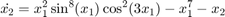

MAE 5803 - Homework #2 Problem #2
Tim Coon: 9, February 2017
Contents
clear; close all; clc;
Equilibrium Points and Stability
Fo the following systems, find the equilibrium points and determine their stability. Indicate if the stability is asymptotic and if it is global.


Eqn #1:
First-order state equation
Eqn #2:
First-order state equation
Eqn #3:
First-order state equation


Eqn #4:
First-order state equation

Eqn #5:
First-order state equation

Plots
The 2-dimensional function is plotted for the specified region by simply limiting the region in the tangential direction and viewing normal to the x1-x2 plane.
for i = 1: length(f) figure(i); fsurf(f(i,1)) xlim([-2 2]); ylim([-2 2]); zlim([0 1]); view(2) title(f{i,2},'Interpreter','tex') end
Undefined function or variable 'f'. Error in HW2P2 (line 58) for i = 1: length(f)